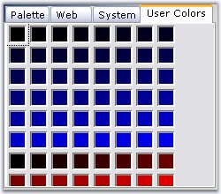

Color cells of the UserGroup panel in a ColorUIControl, can be customized using the below code. We can use UserColors and UserCustomColor for this purpose.
|
[C#]
// For example assume you have a ColorUIControl colorUIControl1. for( int i = 0 ; i < this.colorUIControl1.UserColors.Count; i ++ ) { this.colorUIControl1.UserColors[ i ] = Color.FromArgb( 0, 0, i * 5 ); } for( int i = 0 ; i < this.colorUIControl1.UserCustomColors.Count; i ++ ) { this.colorUIControl1.UserCustomColors[ i ] = Color.FromArgb( i * 15, 0, 0 ); } this.colorUIControl1.SelectedColorGroup = Syncfusion.Windows.Forms.ColorUISelectedGroup.UserColors;
// Resize of ColorCells can be done using property UserColorsStretchOnResize. this.colorUIControl1.UserColorsStretchOnResize = true; |
|
[VB.NET]
Dim i As Integer For i = 0 To Me.colorUIControl1.UserColors.Count- 1 Step i + 1 Me.colorUIControl1.UserColors( i ) = Color.FromArgb(0, 0, i * 5) Next Dim i As Integer For i = 0 To Me.colorUIControl1.UserCustomColors.Count- 1 Step i + 1 Me.colorUIControl1.UserCustomColors( i ) = Color.FromArgb(i * 15, 0, 0) Next Me.colorUIControl1.SelectedColorGroup = Syncfusion.Windows.Forms.ColorUISelectedGroup.UserColors ' Resize of ColorCells can be done using property UserColorsStretchOnResize. Me.colorUIControl1.UserColorsStretchOnResize = True |
 Note
:
UserGroups should be selected
in ColorGroups property to effect the above settings.
Note
:
UserGroups should be selected
in ColorGroups property to effect the above settings.

Figure 302: UserColors and UserCustomColors added to UserGroups